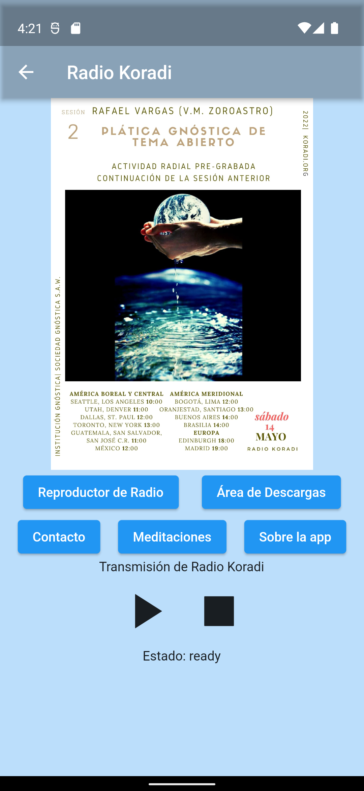

Koradi App
- The Koradi App is a Flutter project allowing users to interact with Koradi Radio. This application has been localized for six different languages and allows users to connect to a continuous audio stream originating from the Koradi Radio server. It implements a background audio service in order to continuously play media, even when the app is not in the foreground.
